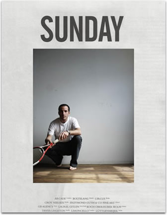
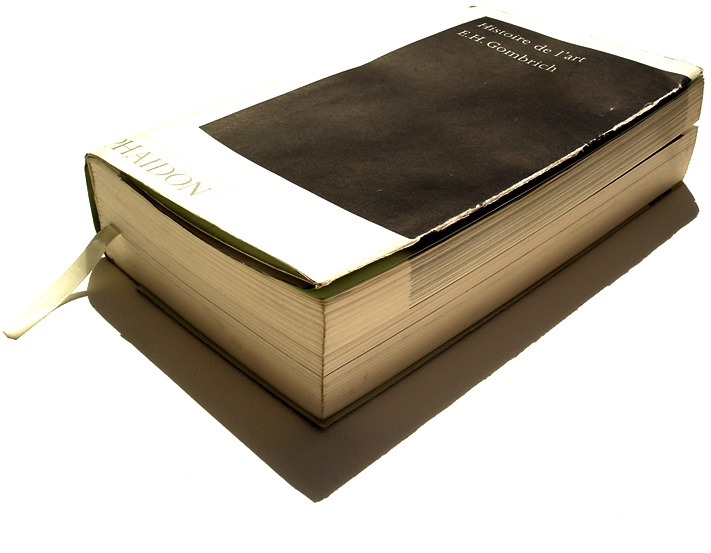
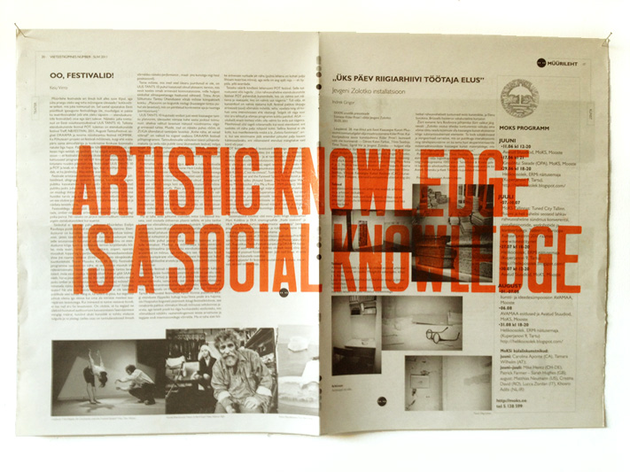
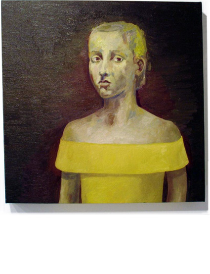

|
|
|
|
SYLVAIN BRETON
______________________________________
|
______________________________________
|
______________________________________
|
|

|
PRATIQUE RÉCENTE_RECENT WORKS
2011
WALL OF ESTONIAN DOORS
2011
THE LINGUISTIC TUNNEL
2011
M6 EXAM
2011
METROPOLOGY
2011
POSTDUCHAMPIAN LAWS
2011
THE NARCISSIST EMPOWERMENT...
2011
1948
2011
REALITY PRODUCTION
2011
MENU
2011
FIGHTING LEFT AND RIGHT...
2010
UNTITLED
2010
RED TORNADO
SÉLECTION_SELECTION
2008
A CONSPIRACY THEORY
2006
THE DELIVERY GUY
2006
LES ORPHELINES
2006
ART OF THE INVISIBLES
2005
DIPLOMATE ON TRIAL
2005
SNOWMAN
2004
STRIKE
2004
LE DÎNER
2003
SAFEPLACE
2003
TRAVEL PACKAGE
2003 THIN
2000
FROZEN
|
|
SUNDAY : You're Fired!, 2013
Pärnu, Gutenbergi
PojaD, Pärnu Linnagalerii, Estonie, 111 pages
|
|
TIME, 2011-2015
Maîtrise en histoire de l'art comme production de la connaissance
|
|

|
Le Diplôme sturtevien:la réévaluation de la notion d'objet
dans l'esthétique contemporaine, 2015-2019
Doctorat en études et pratiques des arts
Dans le cadre d'une production de la connaissance réalisée à
l'université, une encyclopédie du réel académique voit le jour,
session par session, pour l'ensemble des études réalisées par
l'artiste, de sa propédeutique à la maîtrise en histoire de
l'art.
Avant tout une étude épistémologique (Edgar Morin,
La méthode, 1986) pour un encadrement des études
académiques en art contemporain, la teneur encyclopédique prend
physiquement forme par un volume par session et y retrace le
programme et son concours de diplôme de maîtrise. Recourant au
concept du livre d'artiste, chaque volume correspond à des
transcriptions audio des séminaires, une numérisation d'examens
et de feuillets produit dans le cardre d'exercices et de
résultats, lesquels opèrent un déplacement quant au réel enjeu
et étude en histoire de l'art: prendre à la source une
conception du réel, celle des connaissances disponibles à
l'université, et en faire le cadre et le matériau d'une
performance en art contemporain. Le Grand catalogue devient
l'heure, l'espace et le mouvement de la maîtrise. L'artiste
participe avec l'institution, travaille à côté d'elle. De cette
allégorie des hautes sphères du savoir, page par page, de la
parole aux mots, il adopte ce concept de "production de la
connaissance", non plus d'objets, pour que se manifeste la
question de l'œuvre d'art, laquelle interroge, creuse et met en
perspective des mêmes questions d'auteur et d'origine dans le
domaine de l'esthétique contemporaine, dont cette remise en
cause du mythe de la disparition de l'objet que sont, peut-être,
des enregistrements de la vie académique, situations, notamment,
qui peuvent sembler délictueuses que d'usurper, de reprendre
cette trame de l'existence d'une classe, de son professeur, par
cette équation au postmodernisme qui date depuis le rejet du
Formalisme du début des années 1960, de l'Expressionnisme
abstrait ou du Paintely Abstaction (terme proposé par
Clement Greenberg sans jamais véritablement s'imposer) que la
"copie" en art, un enjeu de répétition et de
l'originalité chez la néo-avant-garde américaine du milieu des
années 1960, Elaine Sturtevant.
Sujet de mémoire :
Le « déjà-vu » en art contemporain: Une quête de
l'originalité dans le travail de l'artiste américaine des
années 1960, Sturtevant, sous la direction de Monsieur Jean-Philippe Uzel.
ci-contre: E.H. Gombrich, Histoire de l'art, Trad. de
l'anglais par J. Combe, C. Lauriol et D. Collins, Phaidon,
Paris, Édition de poche, 2006, 1046 p.; Photo: l'artiste.
|
|

|
Statements , 2011
Impression LED, encre rouge, journaux russes et estoniens
63
x 42 cm
Factory Polymer,
M6 Exam: Exhibition/Residency as a School , Tallinn,
Estonie
Projet typographique en collaboration avec les artistes de
l’événement
M6 Exam: Exhibition/Residency as a School.
|

|
|
SUIVANT >
Les Orphelines (Thérèse, Balthus) , 2006, huiles
sur toile, 50.80 X 50.80 cm, "États", Galerie B-312,
Montréal
Un des principes fondamentaux en art contemporain
est l'originalité, et la relation entre "original" et
"originalité" est au coeur de ces reprises du XVIIIe, des
visages de la première modernité, dont un tableau du XXe. Dans la
continuité du projet conceptuel, les tableaux de la série
Les Orphelines engagent par une pratique à l'huile le
questionnement d'une visualité récurrente du corps en performance,
l'image ou l'objet détenant aussi des valeurs de performativité qui
équivalent celui du corps de l'artiste en performance.
|

|
|
M6 EXAM: Exhibition/Residency as a School , 2011.
Enquête des 12 textes de la biennale Manifesta 6 de 2006,
Projet commissaire, Culture Polymer Factory, Tallinn,
Estonia
|
.jpg)
|
|
The Linguistic Tunnel, 2011
photo: Tanel Saar
Performance vs Installation, 28 windows
at variable dimensions; Culture Factory Polymer, Global
Container XVIII created by Eric Alalooga, Sandra Jorgeva &
Tanel Saar, Tallinn, Estonia
Special Acknowledgments: Erik Alalooga, Tanel V Kulla
& Tanel Saar
|
byAnalogy.org
______________________________________
The Gemini Interview
Agence des possibilités et des impossibilités par un
entretien avec Gemini
M6 EXAM: Exhibition/Residency as A School
Exposition/résidence en Estonie
SUNDAY "You're Fired!"
Monographie de l'artiste
Notice: SHUT DOWN
Placardage et pratique post-duchampienne
|
______________________________________
The Gemini Interview
A
gency of
possibilities
and impossibilities by an interview with
Gemini
M6 EXAM: Exhibition/Residency as A School
Exhibition/residency in Estonia
SUNDAY "You're Fired!"
Artist's documentation
Notice: SHUT DOWN
Post-duchampian practice & boarding-up
|
______________________________________

|
|
______________________________________
|
______________________________________
|
|
|